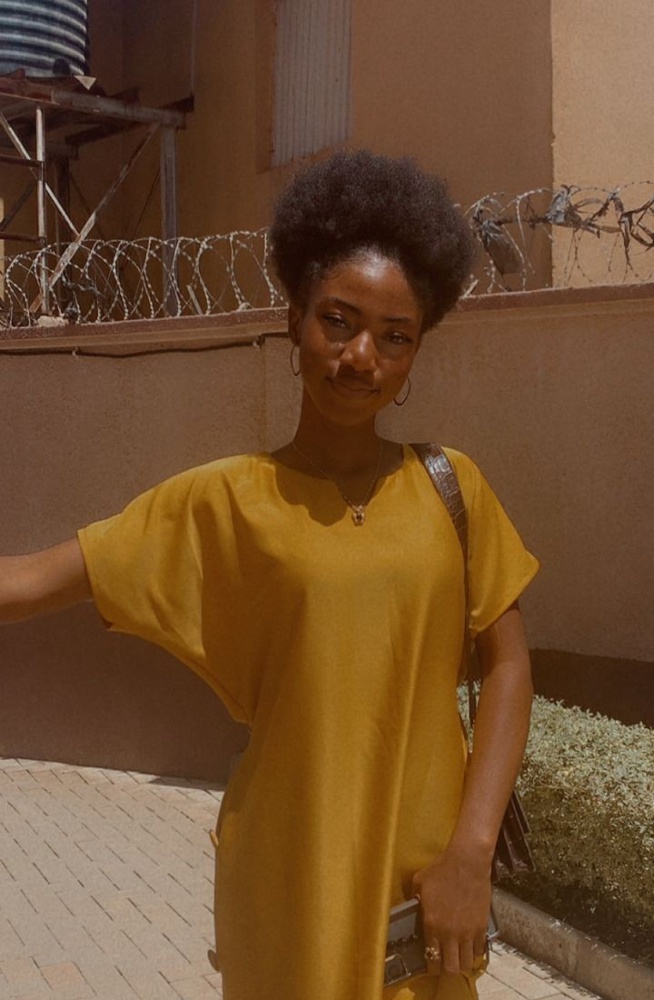

Glory Ene Offiong | WDD 130

i am a creative, curious, and hardworking person who enjoys learning new things and expressing myself through creativity. I am passionate about graphic design because it allows me to combine my imagination with problem-solving to create meaningful and visually appealing work. I enjoy experimenting with different ideas, exploring new styles, and finding creative ways to communicate a message. I would describe myself as calm, reserved, thoughtful, and observant, although I also have a playful and fun side when I feel comfortable around people. I value honesty, kindness, respect, personal growth, and meaningful relationships. I believe that every experience, whether good or challenging, can teach me something valuable. I am always looking for opportunities to improve myself, develop my skills, and become more confident in what I do. My goal is to continue growing creatively and personally while using my talents to make a positive impact through my work and the way I connect with others..